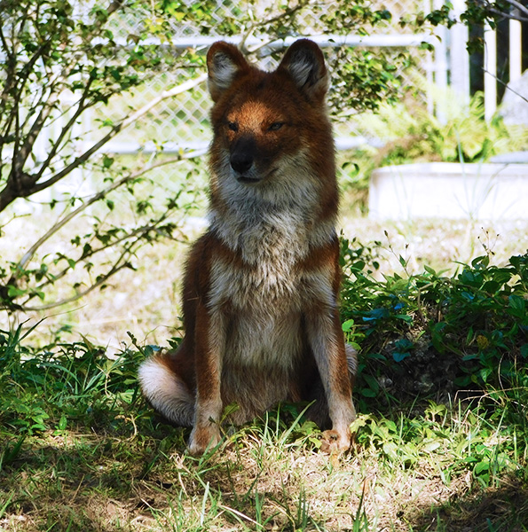

Dholes are found in the US in zoos and they are listed as endangered. This particular one, pictured, was at the Zoo Miami in Florida. These dog-like creatures are native to eastern and southern Asia. Much like dogs, they are very social animals and live in large packs. Their packs differ from others due to them not having a strict dominance hierarchy. A fun fact about them, is that they are nicknamed the whistling dog due to their communication noises. These noises can sound like a whistle, a scream or even a cluck like a chicken.
